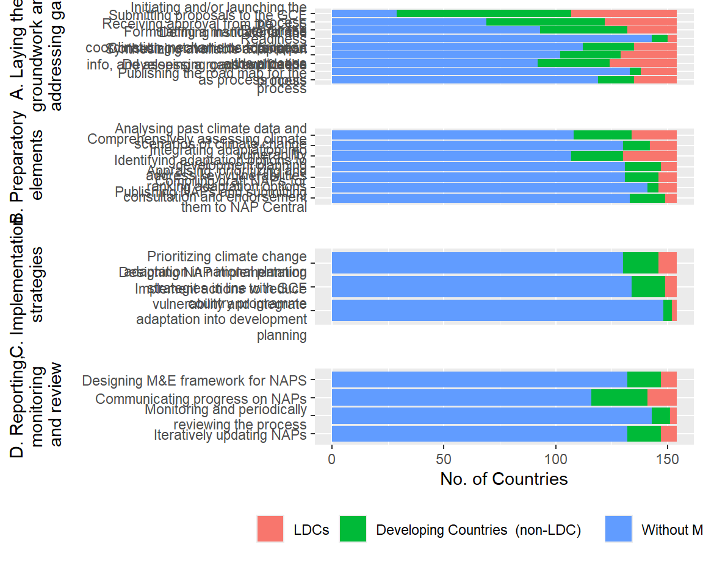

Measures
column
Measures General Outlook
Measures Outlook - Grouped
ggplot - delete

OTHER G
Select Measures
Select Measures- General Outlook
Important Measures - general
Select Measures - By Region
Important Measures by Country Category
Select Measures - By Country Category
Measures Select- Outlook
Find full list of measureshere
Measures-Interactive
column
All Measures
*** To un-filter, delete item from filter box, ** To reset all filters, refresh your browser
Select Measures
*** To un-filter, delete item from filter box, ** To reset all filters, refresh your browser
Measures - Categorized
row
gg
NAP Submissions
Countries with submitted NAPS
GCF
Column { .tabset, style=height:200pc;, data-height=650}
Total GCF by Country
Total GCF Project Amounts by Country
column
GCF Resources by Country
GCF Projects Resources by Country
Map Notes
The bigger the circle marker, the larger the Total GCF amount the country has accessed (incl.Projects and NAP readiness).
The thicker the circle outline, the larger the amount the country has accessed specifically for GCF funded projects.
NAP Readiness
Column { .tabset, style=height:200pc;, data-height=650}
Readiness Support
Readiness Approval Timeline
column
GCF Readinesss by Country
Readiness by Delivery Partner
LDCF/SCCF
Column
LDCF
SCCF
row
LDCF by Region
SCCF by Region
Projects
To do: check if we have links to project websites or project files somewhere
Explore NAP Measures with pivot table
Column
Application hint
- Select desired graphic to draw from the drop-down menu on the first column
- Drag-&-Drop the variable(s) of interest from the first column into the second column. To remove variables from the active (second column) drag-&-drop them back to the first column
- Then from the drop down menu on the second column select how you want to represent your values e.g as a Count, Sum, List, etc. See screenshot.